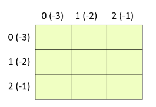

06-matplotlib
表格绘制基本操作¶
- 导包和配置
%matplotlib notebook # 魔法配置,可以让表格显示在jupyter里面
import matplotlib.pyplot as plt #导包
- 中文字体支持
https://blog.csdn.net/DicserYan2518/article/details/84501315
plt.rcParams['font.sans-serif'] = ['SimHei'] # 用来正常显示中文标签
plt.rcParams['axes.unicode_minus'] = False # 用来正常显示负号
- 绘制折线图
fig = plt.figure()
plt.plot([2, 3, 1, 4]) # 默认x是0开始, (0,2), (1,3), (2,1), (3,4)
plt.xlabel('x') #x轴标签
plt.ylabel('y') #y轴标签
plt.show()
- 指定绘制图形的大小
fig = plt.figure(figsize=(5, 4), dpi=90)
- 绘制三角函数
import numpy as np
X = np.linspace(-np.pi, np.pi, 7) # -pi到pi之间的7个点
C = np.cos(X)
S = np.sin(X)
fig = plt.figure(figsize=(5, 4), dpi=80)
plt.plot(X, C)
plt.plot(X, S)
plt.show()
- 指定线宽和颜色
fig = plt.figure(figsize=(5, 4), dpi=80)
# 宽度2 样式 --
plt.plot(X, C, color="navy", linewidth=2, linestyle="--")
# 宽度1 样式 -
plt.plot(X, S, color="deeppink", linewidth=1, linestyle="-")
plt.show()

- 指定x和y轴的范围,和标签内容
fig = plt.figure(figsize=(5, 4), dpi=80)
plt.plot(X, C, color="navy", linewidth=2, linestyle="--")
plt.plot(X, S, color="deeppink", linewidth=1, linestyle="-")
plt.xlim(-4.0, 4.0) # Set x limits
plt.ylim(-1.0, 1.0) # Set y limits
plt.xticks(np.linspace(-4, 4, 9, endpoint=True)) # Set x ticks
plt.yticks(np.linspace(-1, 1, 5, endpoint=True)) # Set y ticks
plt.show()
- 内联latex表达
fig = plt.figure(figsize=(5, 4), dpi=80)
plt.plot(X, C, color="navy", linewidth=2, linestyle="--")
plt.plot(X, S, color="deeppink", linewidth=1, linestyle="-")
plt.xlim(-4.0, 4.0)
plt.ylim(-1.0, 1.0)
plt.xticks([-np.pi, -np.pi/2, 0, np.pi/2, np.pi], # Replace numbers with greek letters
[r'$-\pi$', r'$-\pi/2$', r'$0$', r'$+\pi/2$', r'$+\pi$'])
plt.yticks([-1, 0, +1], [r'$-1$', r'$0$', r'$+1$']) # Replace '1' with '+1'
plt.show()
- 使用 (r' ')包裹
- ($)环绕latex表达式
- 修改坐标轴位置
``` fig = plt.figure(figsize=(5, 4), dpi=80) plt.plot(X, C, color="navy", linewidth=2, linestyle="--") plt.plot(X, S, color="deeppink", linewidth=1, linestyle="-") plt.xlim(-4.0, 4.0) plt.ylim(-1.0, 1.0) plt.xticks([-np.pi, -np.pi/2, 0, np.pi/2, np.pi], [r'-\pi', r'-\pi/2', r'0', r'+\pi/2', r'+\pi']) plt.yticks([-1, 0, +1], [r'-1', r'0', r'+1'])
ax = plt.gca() # 获取当前坐标轴 'get current axis' ax.spines['right'].set_color('none') # 隐藏右边框 ax.spines['top'].set_color('none') # 隐藏上边框 ax.spines['bottom'].set_position(('data',0)) # 底边框与数据0对齐 ax.spines['left'].set_position(('data',0)) # 左边框与数据0对齐 ```
- 添加函数描述
``` fig = plt.figure(figsize=(5, 4), dpi=80) plt.plot(X, C, color="navy", linewidth=2, linestyle="--", label="cos") # Add a label for cos plt.plot(X, S, color="deeppink", linewidth=1, linestyle="-", label="sin") # Add a label for sin plt.legend(loc='upper left') # Add the legend plt.xlim(-4.0, 4.0) plt.ylim(-1.0, 1.0) plt.xticks([-np.pi, -np.pi/2, 0, np.pi/2, np.pi], [r'-\pi', r'-\pi/2', r'0', r'+\pi/2', r'+\pi']) plt.yticks([-1, 0, +1], [r'-1', r'0', r'+1'])
ax = plt.gca() ax.spines['right'].set_color('none') ax.spines['top'].set_color('none') ax.spines['bottom'].set_position(('data',0)) ax.spines['left'].set_position(('data',0)) plt.show() ```
- 设置关键点标注
fig = plt.figure(figsize=(5, 4), dpi=90) #
plt.plot([2, 3, 1, 4])
plt.xlabel('x')
plt.ylabel('y')
plt.annotate('转折点',
xy=(1, 3), xytext=(+10, +30),
textcoords='offset points', fontsize=12,
arrowprops=dict(arrowstyle="->"))
plt.show()
绘制子表格¶
- 准备数据
1 2 3 4 5 6 | |
- 同时绘制两个表格
1 2 3 4 5 6 | |
- 打开关闭网格
1 2 3 4 5 6 7 8 | |
格子布局¶

1 2 3 4 5 6 7 8 9 10 11 12 13 14 | |